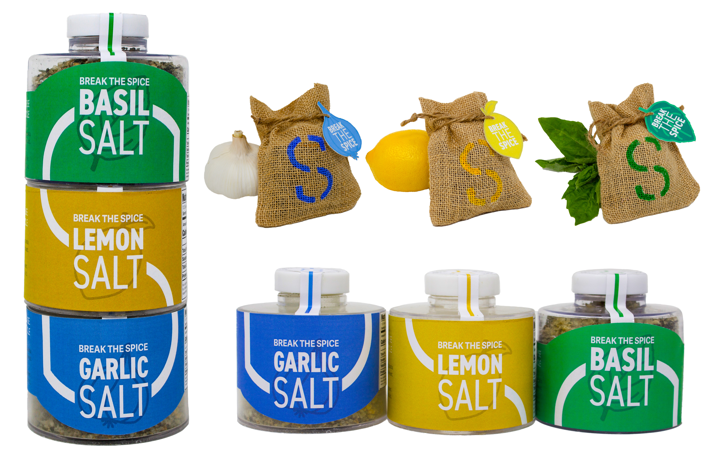

Vinyl Record Redesign &
typographic
System
The twin records by Queen, A Day At the Races, and Night at the Opera, are very loved albums by many. As a Queen fan myself, I jumped at the opportunity to redesign the twin record albums in an Art Deco graphic style.
The "Power of Habit" is a New York Times bestselling novel by Charles Duhigg. This book teaches you the nature of habits and how they can be changed. This book made a positive impact on my life and I wanted to redesign the cover and implement a typographic system.
Label Series & Brand Identity
Break the Spice, a play on the words "break the ice", is a spiced salt company that specializes in sustainable packaging. The company's goal is to break the single-use packaging cycle. Break The Spice is changing the game.
Genero is a generic plant brand with a fun and fresh take on plant brand identity. Genero's brand identity represents the positive mental health benefits plants have on you. This brand series must be functional and visually friendly.
Basco is a family-owned company known for making delicious handmade pasta. The family migrated from Italy to Wisconsin and will now sell their pasta in stores across the US. It was important to the family that the packaging design be rooted in their Italian heritage and family-friendly, representing the art of pasta making.
Packaging, Brand identity, & logo design
Sprout is a plant care company that aims to make caring for plants fun and welcoming to all ages. Through bright colors, lively illustrations, clever copywriting, and a fresh POP display Sprout advocates for plants' positive effects on mental health. I pivoted from typical boxy seed displays to create a cactus seed display.